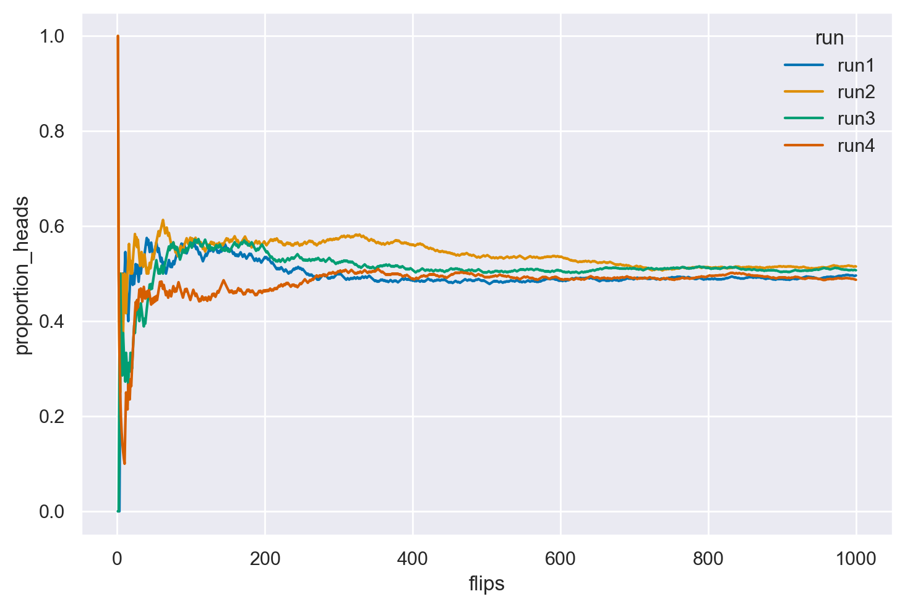

import pandas as pd
import numpy as np
from matplotlib import pyplot as plt
import matplotlib.patches as patches
import itertools as it
import math
import random
import scipy.stats as stats
import arviz as az
import seaborn as sns
from collections import Counter25 Interpretazione della probabilità
Prerequisiti
- Leggi Appendice I.
Concetti e competenze chiave
- Comprendere le diverse interpretazioni della probabilità.
- Conoscere e saper applicare i concetti di spazio campionario ed evento.
- Interpretare gli assiomi della probabilità.
- Avere una chiara comprensione della legge dei grandi numeri.
- Calcolare la probabilità tramite simulazione.
- Applicare la legge dei grandi numeri tramite simulazione.
- Calcolare le permutazioni e le combinazioni.
Preparazione del Notebook
# set seed to make the results fully reproducible
seed: int = sum(map(ord, "intro_prob"))
rng: np.random.Generator = np.random.default_rng(seed=seed)
sns.set_theme(palette="colorblind")
az.style.use("arviz-darkgrid")
%config InlineBackend.figure_format = "retina"Introduzione
“La probabilità è il concetto più importante nella scienza moderna, soprattutto considerando che nessuno ha la minima idea di cosa significhi davvero.” (Attribuito a Bertrand Russell, 1929)
Nel corso di questo capitolo, esploreremo varie concezioni della probabilità, tra cui la visione classica, frequentista e bayesiana. Inoltre, introdurremo la simulazione con Python per una migliore comprensione della legge dei grandi numeri, un concetto fondamentale nell’ambito della probabilità. Iniziamo introducendo il concetto di causalità.
25.0.1 Il Concetto di Casualità e la Teoria della Probabilità
25.0.2 L’Emersione del Concetto di Casualità
La casualità emerge ogni volta che ci troviamo in una situazione caratterizzata da incertezza, in cui non possiamo prevedere con certezza l’esito di un evento. Questo concetto è fondamentale in molteplici contesti, dai giochi d’azzardo alla ricerca scientifica, e rappresenta un modello che ci aiuta a gestire l’imprevedibilità intrinseca in molti fenomeni. La casualità è il nostro modo di comprendere ciò che è incerto, permettendoci di trattare e quantificare eventi che, pur non potendo essere previsti singolarmente, seguono comunque schemi riconoscibili.
25.0.3 L’Urna come Modello di Casualità
Un modo semplice ma efficace per rappresentare la casualità è il classico modello dell’urna. Immaginiamo un’urna contenente numerose palline identiche, ciascuna numerata consecutivamente. Supponiamo che ogni pallina abbia la stessa probabilità di essere estratta. Definiremo quindi l’estrazione come “casuale”, perché ogni pallina ha uguali possibilità di essere selezionata. In questo contesto, non possiamo anticipare quale pallina verrà estratta, ma sappiamo che ognuna ha la stessa probabilità di esserlo.
Questo modello apparentemente semplice, basato sull’equivalenza delle probabilità, rappresenta in realtà l’essenza della casualità. Ci consente di estendere questo concetto per spiegare situazioni molto più complesse, dove possiamo applicare il principio della casualità a fenomeni ben oltre l’estrazione di palline, come il comportamento umano o i risultati di un esperimento scientifico.
25.0.4 Applicazioni del Concetto di Casualità
La casualità trova applicazione in diversi ambiti, e il modello dell’urna offre una base di comprensione per i seguenti contesti:
Giochi d’azzardo: Per garantire un ambiente “equo” per i giocatori, si cerca di fare in modo che ogni numero o risultato abbia la stessa probabilità di verificarsi. La casualità è qui fondamentale per assicurare che nessun risultato sia predeterminato.
Indagini statistiche: Nei sondaggi o nelle ricerche demografiche, il campionamento casuale consente di ottenere un campione rappresentativo di una popolazione più ampia, riducendo il rischio di bias di selezione e offrendo inferenze generalizzabili.
Sperimentazione scientifica: La randomizzazione è utilizzata per distribuire casualmente i partecipanti tra i diversi gruppi sperimentali, permettendo così di controllare variabili confondenti e assicurare che le differenze osservate siano imputabili all’intervento e non ad altri fattori.
Crittografia: Molti sistemi di sicurezza informatica si basano sulla generazione di numeri casuali per creare chiavi crittografiche robuste, che risultino difficili da prevedere e quindi da decifrare.
Simulazioni: In vari campi scientifici, come la fisica o la psicologia, i modelli basati sulla casualità permettono di simulare sistemi complessi e di fare previsioni sugli esiti possibili.
25.0.5 Dalla Casualità alla Teoria della Probabilità
Il concetto di casualità rappresenta il fondamento della teoria della probabilità, che fornisce gli strumenti matematici per quantificare e analizzare rigorosamente l’incertezza. La teoria della probabilità, infatti, consente di trasformare la nostra intuizione della casualità in un modello matematico, attraverso il quale possiamo fare previsioni, calcolare rischi e prendere decisioni in condizioni di incertezza.
In particolare, la teoria della probabilità ci permette di:
Quantificare l’incertezza: Assegnando un valore numerico a ciascun esito possibile, possiamo esprimere in modo preciso quanto riteniamo probabile ciascun risultato.
Combinare informazioni: Attraverso regole matematiche come la somma e il prodotto delle probabilità, possiamo calcolare la probabilità di eventi complessi derivati da eventi più semplici.
Aggiornare le credenze: Quando emergono nuove informazioni, la teoria della probabilità (soprattutto in ambito bayesiano) ci fornisce metodi per aggiornare le nostre stime di probabilità in modo coerente e razionale.
Prendere decisioni informate: La probabilità ci aiuta a valutare rischi e benefici attesi in situazioni incerte, orientando le nostre scelte in maniera ottimale.
25.0.6 L’Importanza della Quantificazione dell’Incertezza
Quantificare l’incertezza attraverso la teoria della probabilità è cruciale in molti campi:
- Ricerca scientifica: La probabilità permette di valutare la solidità dell’evidenza raccolta a supporto di un’ipotesi.
- Psicologia: In ambito clinico e sperimentale, la probabilità aiuta a valutare l’efficacia dei trattamenti e a prendere decisioni informate su interventi terapeutici.
- Economia e finanza: La teoria della probabilità è fondamentale per la gestione del rischio e la valutazione di investimenti.
- Previsioni meteorologiche: Permette di comunicare l’incertezza legata alle previsioni, dando una stima del margine di errore.
In sintesi, il concetto di casualità e la teoria della probabilità costituiscono strumenti potenti per navigare un mondo intrinsecamente incerto. Forniscono un linguaggio preciso per descrivere l’incertezza e un quadro rigoroso per ragionare su di essa. Comprendere questi concetti è essenziale non solo per matematici o statistici, ma per chiunque desideri prendere decisioni razionali in condizioni di incertezza, che si tratti di ricercatori, psicologi o cittadini comuni.
Nei capitoli seguenti, esploreremo in dettaglio come questi concetti si applicano all’analisi dei dati, con un focus particolare sull’approccio bayesiano. Questo metodo offre un modo naturale e intuitivo di ragionare sull’incertezza, aggiornando progressivamente le conoscenze alla luce di nuove evidenze.
25.0.7 Storia e Definizioni della Probabilità
La probabilità è un concetto cardine nella matematica e nelle scienze, utilizzato per misurare l’incertezza e studiare fenomeni aleatori. Nel corso del tempo, la sua definizione si è evoluta, passando da intuizioni di tipo qualitativo a formulazioni formali e rigorose.
La probabilità nasce dal bisogno di distinguere gli eventi deterministici, il cui esito è prevedibile, da quelli casuali, caratterizzati dall’imprevedibilità. Un evento deterministico, almeno in teoria, produce sempre lo stesso risultato nelle stesse condizioni, mentre un evento casuale ha esiti che non possiamo prevedere con certezza. Questa distinzione ha portato alla necessità di quantificare l’incertezza associata agli eventi casuali, utilizzando il concetto di probabilità.
25.0.8 Fonti dell’Incertezza
L’incertezza nei fenomeni casuali può derivare da due fonti principali:
Incertezza epistemica: Questa forma di incertezza è legata alla nostra conoscenza limitata. Ad esempio, in un esperimento scientifico complesso, la nostra impossibilità di controllare tutte le variabili può introdurre incertezza nei risultati.
Incertezza ontologica: Si riferisce alla casualità intrinseca di alcuni fenomeni, come in fisica quantistica, dove l’indeterminazione sembra essere una caratteristica fondamentale della realtà stessa. Un esempio intuitivo è il lancio di un dado: indipendentemente da quanto conosciamo le condizioni, non possiamo prevedere con assoluta precisione il risultato.
Il fisico danese Niels Bohr ha offerto un’interpretazione illuminante su questo tema: la fisica, secondo Bohr, non mira a rivelare una verità assoluta sulla natura, ma a capire cosa possiamo dire su di essa. Questa visione riconosce che l’incertezza – sia epistemica che ontologica – riflette i limiti del nostro linguaggio e delle nostre conoscenze. Questo approccio si allinea bene con l’interpretazione soggettiva della probabilità, secondo la quale la probabilità rappresenta il grado di fiducia che un individuo ha riguardo al verificarsi di un evento, basata sulle informazioni di cui dispone.
25.0.9 Assiomatizzazione della Probabilità
Nel 1933, il matematico Andrey Kolmogorov fornì una definizione formale della probabilità, introducendo un sistema assiomatico che costituì la base della moderna teoria della probabilità. Questa formulazione ha trasformato la probabilità in una disciplina matematica rigorosa, offrendo uno strumento essenziale per quantificare l’incertezza in contesti scientifici. Da semplice metodo per analizzare i giochi d’azzardo nel XVII secolo, la probabilità è diventata una pietra miliare del ragionamento scientifico, fornendo un linguaggio universale per descrivere e analizzare l’incertezza in numerosi campi del sapere.
25.0.10 Interpretazioni Frequentiste e Bayesiane
Le due principali interpretazioni della probabilità sono:
Interpretazione frequentista: In questo approccio, la probabilità di un evento è definita come il limite della frequenza relativa con cui l’evento si verifica in una lunga serie di esperimenti identici. Questa visione oggettiva considera la probabilità come una proprietà intrinseca del fenomeno, indipendente dalle informazioni dell’osservatore.
Interpretazione bayesiana: Al contrario, la probabilità è vista come una credenza soggettiva sul verificarsi di un evento. In questa visione, la probabilità rappresenta il grado di fiducia di un osservatore, dipendente dalle informazioni disponibili e dal contesto. L’approccio bayesiano permette quindi di aggiornare le stime probabilistiche man mano che nuove evidenze vengono acquisite, rendendo la probabilità una misura flessibile della conoscenza.
25.0.11 La Storia della Probabilità
La probabilità moderna nacque da una domanda posta da Antoine Gombaud (Chevalier de Méré) a Blaise Pascal nel XVII secolo su come dividere equamente le puntate di un gioco d’azzardo interrotto.
25.0.11.1 Il Problema dei Punti
Il problema può essere riassunto come segue:
Immaginiamo due persone, A e B, che partecipano a un gioco in cui il primo che vince sei round consecutivi ottiene un premio. Dopo sei round, A ha vinto cinque round e B uno. Poiché il gioco si interrompe prima di assegnare il premio, come dovrebbero dividere il premio in modo equo?
Questa domanda diede origine a una corrispondenza tra Pascal e Fermat, che svilupparono una soluzione matematica basata sulle probabilità di vittoria per ciascun giocatore. Se, per esempio, A aveva una probabilità del 97% di vincere, mentre B una del 3%, sembrava equo assegnare il 97% del premio ad A. La loro corrispondenza ispirò l’opera di Christian Huygens, “De Ratiociniis in Ludo Aleae” (1657), che rimase un riferimento in probabilità per mezzo secolo.
25.0.11.2 Sviluppi Successivi
Nel 1713, Jacob Bernoulli pubblicò postumo “L’Arte della Congettura”, introducendo la legge dei grandi numeri e ponendo le basi per l’applicazione della probabilità al di fuori dei giochi d’azzardo, ad esempio nello studio della mortalità e della giustizia penale.
25.0.12 Interpretazione Classica
La definizione classica di probabilità fu proposta da Pierre-Simon Laplace (1749-1827), che basò il concetto sul calcolo combinatorio. Secondo Laplace, la probabilità di un evento è data dal rapporto tra i casi favorevoli e il numero totale di casi possibili, assumendo che tutti siano equiprobabili. Ad esempio, la probabilità di ottenere un “3” lanciando un dado è \(\frac{1}{6}\), poiché solo uno dei sei risultati è favorevole. Tuttavia, questa definizione è limitata, poiché si basa sull’assunzione che ogni evento sia equiprobabile, il che non è sempre vero. Inoltre, è parzialmente circolare, poiché presuppone una conoscenza implicita del concetto di probabilità.
25.0.13 Interpretazione Frequentista
L’approccio frequentista, nato dalla necessità di evitare le limitazioni dell’interpretazione classica, definisce la probabilità come il limite della frequenza relativa con cui un evento si verifica in una serie infinita di prove. Per esempio, la probabilità di ottenere “testa” in un lancio di moneta può essere stimata come la frequenza relativa di “testa” sul totale dei lanci, quando il numero di lanci tende all’infinito. Questa definizione è utile, ma impraticabile in molte situazioni, poiché richiede un numero infinito di ripetizioni e assume che gli eventi futuri siano identici a quelli passati.
def coin_flips(n, run_label):
# Genera un array di 0 e 1 dove 1 rappresenta 'testa' e 0 'croce'
# usando una distribuzione binomiale.
heads = np.random.binomial(1, 0.5, n)
# Calcola la proporzione cumulativa di teste.
flips = np.arange(1, n + 1)
proportion_heads = np.cumsum(heads) / flips
# Crea un DataFrame per un facile accesso e visualizzazione dei dati.
df = pd.DataFrame({'flips': flips, 'proportion_heads': proportion_heads, 'run': run_label})
return df
n = 1000
df = pd.concat([coin_flips(n, f'run{i+1}') for i in range(4)], axis=0)
ax = sns.lineplot(data = df, x = 'flips', y = 'proportion_heads', hue = 'run')
25.0.14 La Legge dei Grandi Numeri
La simulazione precedente fornisce un esempio della Legge dei grandi numeri. La Legge dei Grandi Numeri afferma che, man mano che il numero di esperimenti casuali ripetuti aumenta, la stima della probabilità di un evento \(P(Y=y)\) diventa sempre più accurata.
Il teorema sostiene che, con l’aumento del numero di ripetizioni di un esperimento casuale, la media dei risultati osservati tende a convergere al valore atteso teorico della variabile casuale. In altre parole, la media empirica dei risultati osservati si avvicina sempre di più al valore medio teorico.
Questa legge è cruciale perché garantisce che, con un numero sufficientemente grande di prove, la stima empirica della probabilità di un evento si avvicina al valore reale. Questo rende le stime probabilistiche più precise e affidabili.
Dal punto di vista pratico, la Legge dei Grandi Numeri consente di utilizzare modelli probabilistici per interpretare fenomeni reali. Anche se le osservazioni singole possono variare in modo casuale, la media delle osservazioni su un ampio numero di ripetizioni rifletterà fedelmente le probabilità teoriche.
Formalmente, data una serie di variabili casuali indipendenti \(X_1, X_2, \ldots, X_n\), ciascuna con media \(\mu\), la Legge dei Grandi Numeri è espressa come:
\[ \lim_{{n \to \infty}} P\left(\left|\frac{X_1 + X_2 + \ldots + X_n}{n} - \mu\right| < \epsilon\right) = 1, \]
dove \(\epsilon\) è un valore positivo arbitrariamente piccolo e \(P(\cdot)\) indica la probabilità. Questo significa che, con un numero molto grande di ripetizioni, la media campionaria osservata sarà vicina alla media teorica attesa, permettendo inferenze affidabili sulla probabilità degli eventi.
In sintesi, la Legge dei Grandi Numeri assicura che, aumentando il numero di prove, le stime empiriche delle probabilità diventano sempre più precise, allineandosi con i valori teorici attesi.
25.0.14.1 Problema del caso singolo
Nell’ambito dell’approccio frequentista alla probabilità, basato sulla concezione delle frequenze relative di eventi osservati su lunghe serie di ripetizioni, emerge un limite concettuale nel trattare la probabilità di eventi singolari e non ripetibili. Secondo questa prospettiva, infatti, non risulta rigorosamente appropriato discutere di probabilità relative a eventi unici e non replicabili nel tempo. Esempi emblematici di tali eventi includono la possibilità che Alcaraz vinca contro Djokovic nella finale di Wimbledon del 2023 o che si verifichi pioggia a Firenze il giorno di Ferragosto del 2024. Questi scenari, essendo unici e circoscritti a un preciso momento storico, sfuggono alla logica frequentista che richiede, per definizione, la possibilità di osservazione ripetuta degli eventi per valutarne la probabilità. Nonostante ciò, nel linguaggio comune non specialistico, è comune l’uso del termine “probabilità” per riferirsi anche a tali eventi specifici e non ripetibili, evidenziando così una discrepanza tra l’uso tecnico e quello colloquiale del concetto di probabilità.
25.0.15 Collegamento tra probabilità e statistica
Durante gli anni ’20 del Novecento, Ronald A. Fisher propose un nuovo framework teorico per l’inferenza statistica, basato sulla concettualizzazione della frequenza. Fisher introdusse concetti chiave come la massima verosimiglianza, i test di significatività, i metodi di campionamento, l’analisi della varianza e il disegno sperimentale.
Negli anni ’30, Jerzy Neyman ed Egon Pearson fecero ulteriori progressi nel campo con lo sviluppo di una teoria della decisione statistica, basata sul principio della verosimiglianza e sull’interpretazione frequentista della probabilità. Definirono due tipologie di errori decisionali e utilizzarono il test di significatività di Fisher, interpretando i valori-\(p\) come indicatori dei tassi di errore a lungo termine.
25.0.16 La riscoperta dei metodi Monte Carlo Markov chain
Fisher assunse una prospettiva critica nei confronti della “probabilità inversa” (ossia, i metodi bayesiani), nonostante questa fosse stata la metodologia predominante per l’inferenza statistica per quasi un secolo e mezzo. Il suo approccio frequentista ebbe un profondo impatto sullo sviluppo della statistica sia teorica che sperimentale, contribuendo a un decremento nell’utilizzo dell’inferenza basata sul metodo della probabilità inversa, originariamente proposto da Laplace.
Nel 1939, il libro di Harold Jeffreys intitolato “Theory of Probability” rappresentò una delle prime esposizioni moderne dei metodi bayesiani. Tuttavia, la rinascita del framework bayesiano fu rinviata fino alla scoperta dei metodi Monte Carlo Markov chain alla fine degli anni ’80. Questi metodi hanno reso fattibile il calcolo di risultati precedentemente non ottenibili, consentendo un rinnovato interesse e sviluppo nei metodi bayesiani. Per una storia dell’approccio bayesiano, si veda Bayesian Methods: General Background oppure Philosophy of Statistics.
25.0.17 Interpretazione soggettivista
Una visione alternativa della probabilità la considera come una credenza soggettiva. Finetti (1970) ha proposto un’interpretazione in cui la probabilità non è vista come una caratteristica oggettiva degli eventi, ma piuttosto come una misura della credenza soggettiva, suggerendo di trattare \(p(·)\) come una probabilità soggettiva. È interessante notare che de Finetti era un soggettivista radicale. Infatti, la frase di apertura del suo trattato in due volumi sulla probabilità afferma che “La probabilità non esiste”, intendendo che la probabilità non ha uno status oggettivo, ma rappresenta piuttosto la quantificazione della nostra esperienza di incertezza. Riteneva che l’idea di una probabilità esterna all’individuo, con uno status oggettivo, fosse pura superstizione, paragonabile al credere in “Etere cosmico, Spazio e Tempo assoluti, …, o Fate e Streghe…”. Secondo de Finetti, “… esistono solo probabilità soggettive - cioè, il grado di credenza nell’occorrenza di un evento attribuito da una determinata persona in un dato momento con un dato insieme di informazioni.”
Come sottolineato da Press (2009), la prima menzione della probabilità come grado di credenza soggettiva fu fatta da Ramsey (1926), ed è questa nozione di probabilità come credenza soggettiva che ha portato a una notevole resistenza alle idee bayesiane. Una trattazione dettagliata degli assiomi della probabilità soggettiva si trova in Fishburn (1986).
La denominazione “soggettivo” legata alla probabilità potrebbe risultare infelice, poiché potrebbe suggerire un ragionamento vago o non scientifico. Lindley (2013) condivide queste riserve, proponendo l’alternativa “probabilità personale” rispetto a “probabilità soggettiva”. Analogamente, Howson & Urbach (2006) preferiscono utilizzare l’espressione “probabilità epistemica”, che riflette il grado di incertezza di un individuo di fronte al problema trattato. In sostanza, la probabilità epistemica si riferisce all’incertezza personale riguardo a variabili sconosciute. Questa terminologia viene adottata anche nel testo di Kaplan (2023), fornendo un linguaggio più neutro per discutere di questi concetti.
Va inoltre notato che l’interpretazione soggettiva si adatta bene a eventi singoli, permettendo di esprimere una convinzione su eventi specifici, come la probabilità di pioggia in un dato giorno o l’esito di una competizione sportiva.
Per chi desidera approfondire, il primo capitolo del testo Bernoulli’s Fallacy (Clayton, 2021) offre un’introduzione molto leggibile alle tematiche della definizione della probabilità nella storia della scienza.
25.1 Commenti e Considerazioni Finali
In questo capitolo, abbiamo esplorato il significato filosofico della nozione di probabilità e introdotto la simulazione come metodo per approssimare le probabilità empiriche quando non è possibile ottenere soluzioni analitiche.
Nel prossimo capitolo, esamineremo la probabilità dal punto di vista matematico.
25.2 Informazioni sull’Ambiente di Sviluppo
%load_ext watermark
%watermark -n -u -v -iv -w -mLast updated: Sat Jul 27 2024
Python implementation: CPython
Python version : 3.12.4
IPython version : 8.26.0
Compiler : Clang 16.0.6
OS : Darwin
Release : 23.5.0
Machine : arm64
Processor : arm
CPU cores : 8
Architecture: 64bit
numpy : 1.26.4
seaborn : 0.13.2
pandas : 2.2.2
scipy : 1.14.0
matplotlib: 3.9.1
arviz : 0.18.0
Watermark: 2.4.3